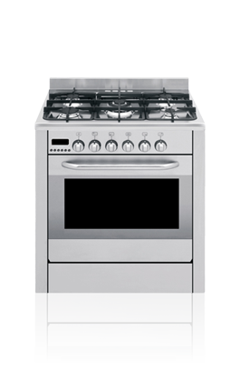

appliance technology
Appliance Technology offers a broad range of appliance maintenance services to domestic and commercial clients. Our large workshop, located in Preston, Lancashire, allows us to carryout appliance rework tasks for rental and leasing companies nationwide. Specialist testing equipment and professional facilities enable us to evaluate electrical products and white goods on behalf of major retailers. With a 30-strong team of specialist engineers we are trusted suppliers of appliance maintenance contracts to companies and organisations across a range of sectors.
15
REPAIRS EVERY HOUR
Appliance Technology Limited is paramount to us being able to provide our customers with quality, own-brand electrical and white goods, and therefore principle to maintaining our excellent reputation.HIGHSTREET RETAILER
LAUNDRY UTILITIES
At AT we service, rework, maintain and evaluate laundry utilities for commercial clients and on behalf of highstreet retailers and third party suppliers. This includes everything from industrial washing machines to domestic condenser tumble dryers.
HOME ENTERTAINMENT
Appliance Technology has the specialist capabilities to help you maintain your home entertainment systems, including televisions, video projectors, surround sound systems and game consoles. Whether you're looking for your hotel's entertainment equipment to be serviced and maintained a one-off repair, AT can help.
KITCHEN APPLIANCES
We have the capabilities to service and maintain all manner of commercial and domestic kitchen appliances, from gas and electric cookers and ovens, extractors and microwaves, to fridges, freezers and chilled cabinets.
MOBILE DEVICES
From contractual maintenance to servicing and testing, Appliance Technology has the technical ability and specialist skills required to repair mobile devices such as tablets and smartphones, as well as other specialist IT equipment.
GARDEN MACHINERY
AT is equipped to repair and service a range of motorised and electrical garden machinery, including lawn mowers and strimmers. We offer tailored appliance maintenance contracts, suitable for businesses and professionals that rely on their garden machinery for their trade.
OTHER ELECTRICALS
At AT our knowledge and experience spans across a diverse range of electrical equipment. Our expert team has the capacity to service, repair, maintenance or test of any piece of electrical equipment, regardless of the make or model. Why not give us a try?